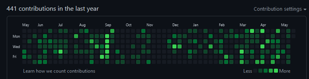

Contributeur Open Source
Les logiciels open source sont aujourd’hui les fondations de l’industrie logiciel.La force des logiciels open sources est que n’importe qui peut lire de code, et faire ses propres modifications.
Souvent, le projet accepte aussi les modifications externes après un audit des changements.
Il est donc possible d’envoyer ces modifications pour faire contribuer à tous les utilisateurs du logiciel.
Je contribue sur les projets que j’utilise, le plus souvent lorsque je trouve un bug, je cherche la cause, corrige, et envoi la correction. J’ai participé aussi bien sur des outils professionnels que des outils pour les jeux vidéo.  Graphique montrant mes contributions sur GitHub au cours de l’année.